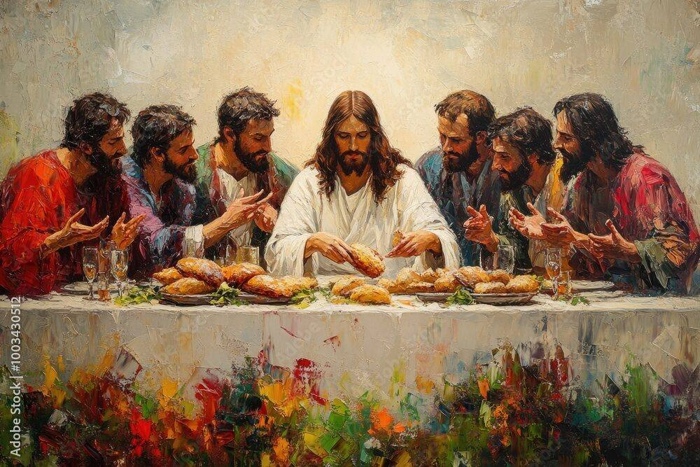

1. Semester
Moving Art
Tilføj din overskrift her

The Last Supper
Moving Art Workshop – “The Last Supper”
Procesbeskrivelse
I denne workshop arbejdede jeg med at skabe et levende, malerisk udtryk inspireret af den klassiske scene Den Sidste Nadver. Målet var at undersøge, hvordan statiske kunstmotiver kan omdannes til moving art, hvor små subtile bevægelser, lysforandringer og tekstur giver billedet nyt liv.
Jeg tog udgangspunkt i et oliemaleri-lignende billede af Jesus og disciplene ved bordet. Fokus i processen var:
- at analysere stemning, farver og penselstrøg i originalmotivet
- at identificere elementer, der kunne animeres uden at forstyrre motivets ro
- at eksperimentere med bevægelse i lys, skygger og let kamerapanorering
- at teste flere værktøjer for at finde det udtryk, der fungerede bedst
Refleksion
Jeg vil være helt ærlig: Jeg er på ingen måde tilfreds med det endelige resultat af dette workshop-projekt.
Jeg havde planlagt en helt anden retning, både visuelt og teknisk, og jeg havde oprindeligt en langt mere ambitiøs idé til, hvordan værket skulle animeres og præsenteres.
Men på grund af stress og tidspres fra et andet, større projekt, nåede jeg ikke at udføre mine oprindelige planer. Resultatet endte derfor som en hurtigere og simplere løsning end det, jeg egentlig ønskede. Det frustrerede mig lidt, fordi jeg ved, at jeg kunne have skabt noget mere interessant, hvis jeg havde haft tiden.
Når det er sagt, har processen alligevel lært mig noget vigtigt:
- at jeg faktisk kan skabe moving art hurtigt, når jeg er presset
- at små justeringer i lys og bevægelse giver stor effekt
- at planlægning og tidsstyring er afgørende for kvaliteten
- og at det er okay, når noget ikke bliver perfekt – så længe man lærer af det
Næste skridt:
Jeg vil gerne vende tilbage til denne idé og lave en version 2.0, hvor jeg arbejder mere grundigt med dybdeeffekt, detaljeret lysanimation og en mere gennemarbejdet komposition. Jeg føler, der ligger et langt bedre resultat gemt i konceptet, og det vil jeg gerne udforske, når jeg har tiden.